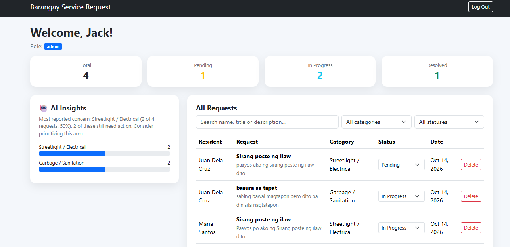
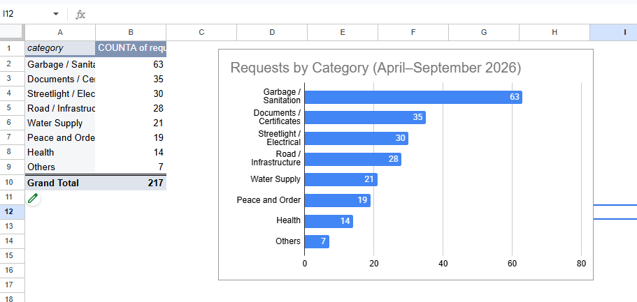
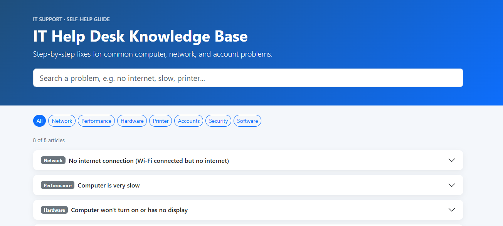

Hi, I'm
Aspiring Help Desk Technician BSIT Student
I help users solve computer problems and turn data into clear, organized reports.
Education
BSIT, Datamex College of Saint Adeline (Expected 2027)
Senior High
STEM, Moonwalk National High School
Target Role
Help Desk Technician
Interests
IT Support, Data Analytics
Languages
Filipino, English
I am a graduating BSIT student at Datamex College of Saint Adeline in Parañaque City. I finished senior high school in the STEM strand at Moonwalk National High School, and my interest in IT grew through my BSIT classes and the projects I built.
My strongest skills are Microsoft Excel and Google Sheets, creating charts and reports, basic networking, and computer hardware. Through my portfolio projects, I built a web application, analyzed data with Google Sheets and SQL, and created an IT help desk knowledge base.
My goal is to become a Help Desk Technician, the person users can rely on when technology stops working. I value clear communication, honesty, and continuous learning, and I am currently improving my skills in HTML, CSS, SQL, and Python.
Currently learning: Windows Troubleshooting IP Addressing & DNS Ticketing Systems

A web system where residents submit and track barangay service requests online, and staff manage them in one dashboard. Requests are automatically sorted into categories, and the system shows the most reported community concerns.
Key features:

An analysis of 217 sample barangay service requests to find the most common concerns, monthly trends, problem areas, resolution speed, and resident satisfaction. The same questions were answered in Google Sheets and SQL with matching results.
Key findings:

A self-help website with step-by-step fixes for common computer, network, printer, account, and security problems. Every article follows a standard help desk troubleshooting format: Problem, Possible Causes, Diagnostic Procedure, Solution, and Lesson Learned.
Key features:
Five real IT problems I diagnosed and fixed while building my projects.
My portfolio showed only plain text. The sections were squished together and the Home section was hidden behind the navbar, even though I had written the CSS.
Use the New File and New Folder buttons carefully, and always check the folder structure when a file doesn't load. File paths must match exactly.
My Home page showed the text "Profile photo" instead of my picture, even though the photo was inside the images folder.
What I see in File Explorer is not always the real file name. Checking the exact name and extension is one of the first steps when a file "can't be found."
In my Barangay Service Request System, clicking Register showed the error "Registration failed: Invalid path specified in request URL."
Read the error message carefully. It usually points to where the problem is. Configuration values like URLs and keys must be copied exactly.
The admin account could log in, but the dashboard showed "Welcome, ...!" and "Could not load your profile." Registering again said the account already existed.
Understand how tables are connected before deleting data. Removing a user from the right place (Authentication) also removes their related data automatically.
For my data analysis project, my SQL query returned 0 and then the error 'Table "sample_requests" does not exist,' even though the same table had worked in another query.
When something works in one place but not another, compare the two and look for what's different. Small settings can change the whole result.
Help Desk Technician / Technical Support Representative
IT Support, with Data Analytics as a second strength
Excel and Google Sheets (pivot tables, formulas, charts), basic networking, computer hardware, basic SQL, HTML, CSS, JavaScript, Git and GitHub, troubleshooting and documentation.
Finish my BSIT requirements, complete the Google IT Support Certificate, and add more articles to my IT Help Desk Knowledge Base.
Graduate and get hired as a Help Desk Technician or Technical Support Representative. Take the TESDA CSS NC II assessment.
Become an IT Support Specialist (Tier 2), earn CompTIA A+, and use my data skills to create IT support reports for my team.
How I used AI tools responsibly while building this portfolio and my projects.
| Date | Task | AI Assistance | My Verification |
|---|---|---|---|
| [DATE] | Career identity, skills inventory, resume, LinkedIn | Suggested beginner-friendly IT roles, gave skill checklists, and drafted my resume and LinkedIn text from my answers | Rated my own skills honestly using the checklists and checked that every resume detail was true |
| [DATE] | Portfolio website (Home, About, Skills) | Provided HTML, CSS, and Bootstrap code and drafted the About Me text | Built and tested each section in my browser and fixed file and folder errors myself |
| [DATE] | Project 1: database design and security | Wrote the SQL for tables, triggers, and Row Level Security policies | Ran the SQL in Supabase, checked the tables, and tested that one resident could not see another resident's requests |
| [DATE] | Project 1: login, CRUD, admin panel, AI sorting | Provided the JavaScript code and step-by-step instructions | Tested every feature with sample accounts (validation, submit, edit, cancel, search, status updates) and fixed errors like a wrong Supabase URL |
| [DATE] | Project 1: deployment and README | Explained GitHub Pages and drafted the README | Deployed the system, tested it on my phone, and only marked tests as "Passed" after doing them |
| [DATE] | Project 2: data analysis | Generated a simulated sample dataset and built the analysis workbook with formulas and charts | Made my own pivot table and chart, ran the same questions in SQL, and confirmed the SQL results matched the spreadsheet |
| [DATE] | Project 3: IT Help Desk Knowledge Base | Wrote the code and drafted the troubleshooting articles | Tested search and filters, read every article, and deployed it online |
| [DATE] | Troubleshooting cases | Helped write up problems in the required format | Checked that every case is a problem I actually experienced and fixed |
| [DATE] | Resume | Formatted my details into a professional resume | Checked that every detail matches my portfolio and is true |
AI acted like a tutor. It explained each step, gave me starting code, and helped me write documentation. This let me build three working projects and learn tools I had never used before, like Supabase, SQL, and GitHub Pages.
I ran and tested every feature myself, checked that my SQL results matched my spreadsheet, made sure every personal detail was true, and solved the errors that came up while building.
AI is fastest when I give clear details and screenshots. But I still need to understand the code, because the panel and employers will ask me to explain it, not the AI.
Target Role:
Help Desk Technician
Education:
BSIT, Datamex College of Saint Adeline (Expected 2027)
Projects:
3 completed, 2 deployed online
Webinars I attended to build my knowledge beyond the classroom. Click a certificate to view it in full size.
All webinars organized by Ethel Programming Computer Programming Services (online via Google Meet).
I'm open to internship and entry-level opportunities in IT Support and Help Desk. Feel free to reach out!
Before entering BSIT, I knew very little about IT. I came from the STEM strand at Moonwalk National High School, where I studied math and science but not how computers and systems are built. My interest in IT grew while I was already studying it.
The most important thing I learned is that IT is about solving problems step by step. In class, I learned the basics of networking, hardware, and spreadsheets. Through this portfolio, I learned how real systems are built: how a website, a database, and security rules work together. I also learned the value of documentation, testing, and evidence. The rule "no evidence, no skill claim" changed how I see my own skills. I now rate myself honestly and prove what I say with projects.
Project 1, the Barangay Service Request System, taught me the most. It was the first project I built, and almost everything was new to me: VS Code, folders and file paths, JavaScript, Supabase, SQL, and GitHub Pages. Step by step, I built a system with login, a database, search, and automatic categorization, and I deployed it online so it works even on my phone. Seeing it live made me realize that I can build something useful, even as a beginner.
The hardest part was the many small problems along the way, like wrong file paths, configuration errors, and database settings. Each one taught me something. I learned to read error messages, compare what works with what does not, and check the simplest causes first. These experiences became my troubleshooting cases, and they are now real stories I can share in an interview.
My IT skills changed a lot. Now I can build web pages with HTML, CSS, and Bootstrap, write basic SQL queries, design simple database tables, deploy websites, and use GitHub. My Excel and Google Sheets skills also grew, because I used pivot tables and formulas to analyze data and compared the results with SQL. I also learned to use AI tools responsibly. AI helped me like a tutor, but I had to test everything, fix the errors, and make sure I understand what I built.
I still need to improve my coding skills. I want to keep practicing JavaScript and SQL until I can write code on my own without guidance. I also want to strengthen my networking and Windows troubleshooting skills, since these are important for my target job.
I want to become a Help Desk Technician who is patient, always learning, and honest. Patience matters because users who ask for help are often stressed. Continuous learning matters because technology keeps changing. Honesty matters because people trust IT staff with their accounts and data, and because saying "I don't know yet, but I will find out" is better than pretending.
This portfolio started as a requirement, but it showed me what I am capable of. I learned this, I built this, and I can explain how it works.